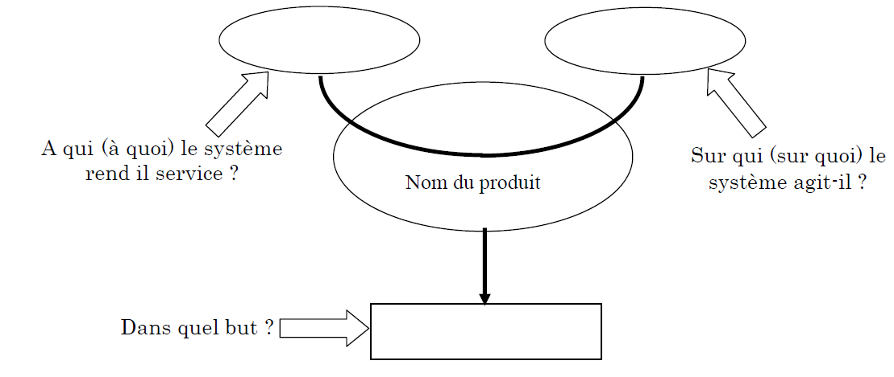
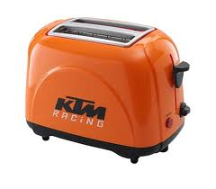
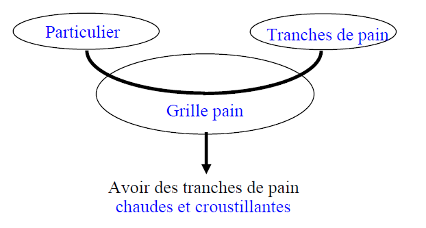

Le besoin doit etre réel et identifié. On peut s'appuyer sur des etudes de marché, des sondages etc... pour le definir ou l'affiner. Cette étapes est cruciale car elle est le génèse du produit fini. Sans besoin, la commercialisation du produit ou du service est voué à l'echec.
Outil de recherche du besoin
Pour formaliser l’énoncé de ce besoin, l’utilisation de l’outil « bête à cornes » est le mieux adapté. Cet outil pose 3 questions : à qui le produit rend-il service ? sur quoi agit-il ? dans quel but ?

Exemple : Le grille pain


Created with the Personal Edition of HelpNDoc: Free help authoring tool